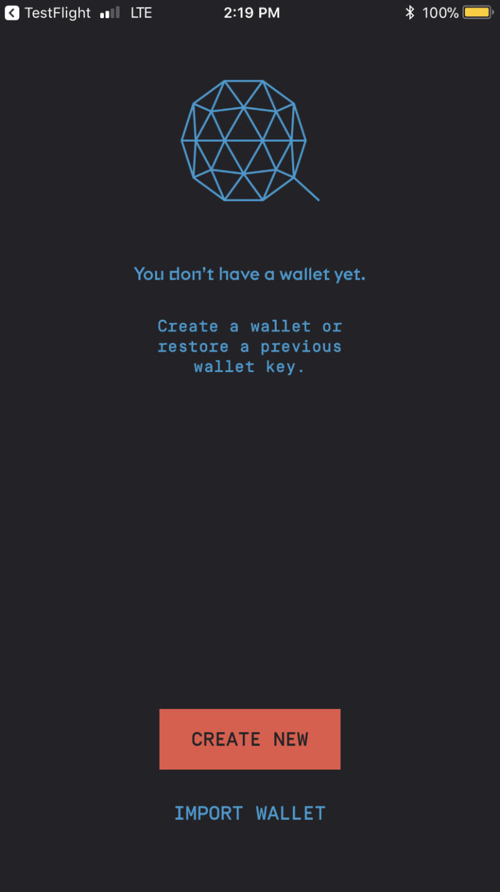
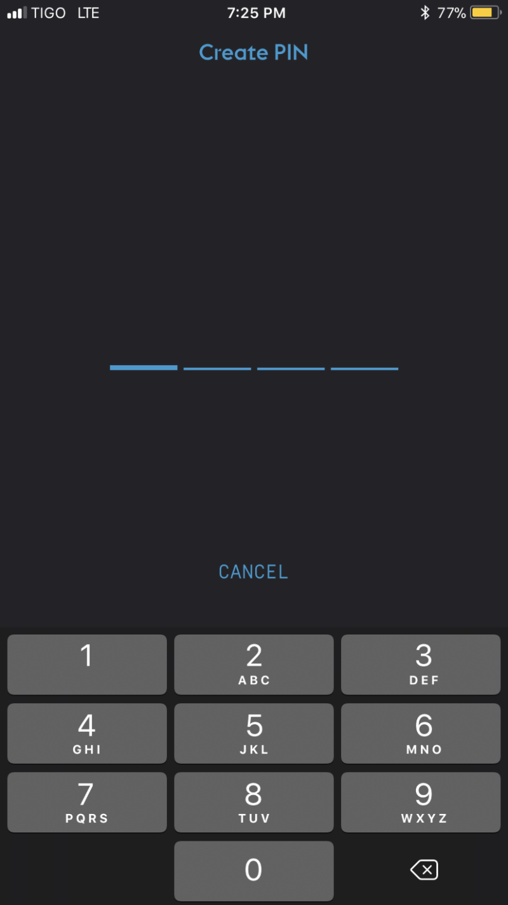
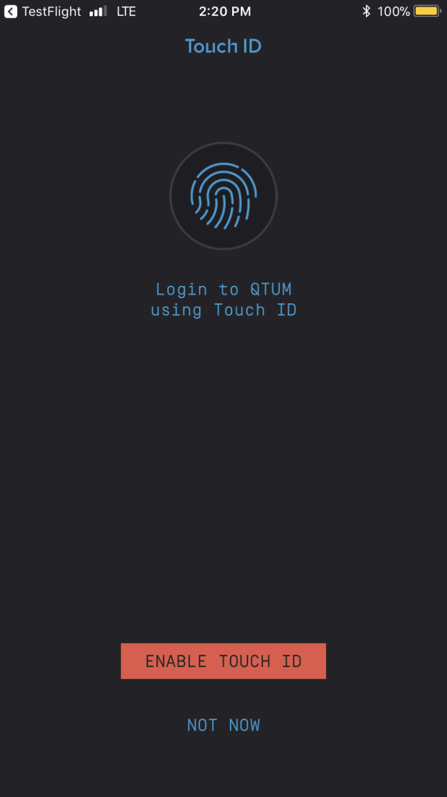
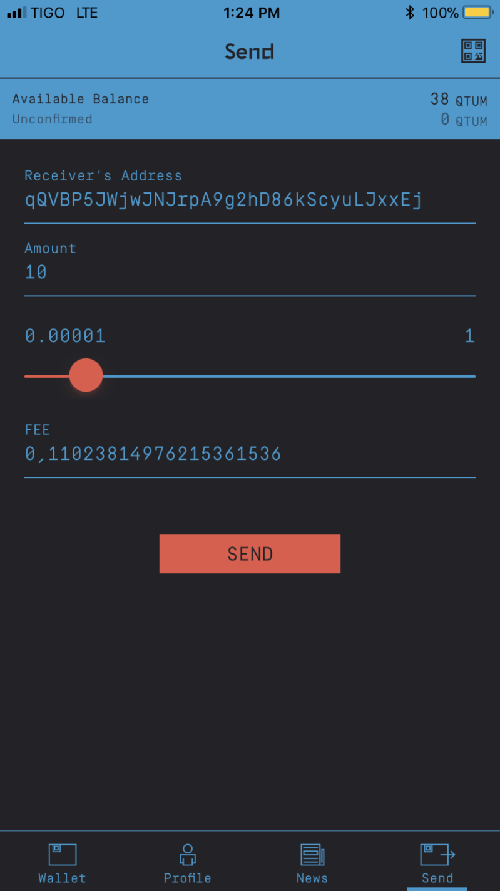
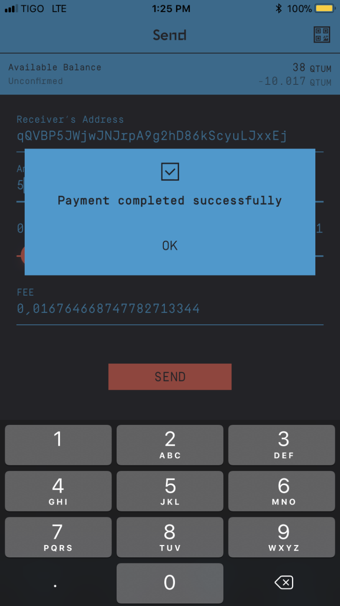

QTUM Billetera Movil
Empecemos
Una vez que hemos instalado nuestra billetera Qtum, ya sea desde la App Store de Apple o la tienda Google Play, podemos abrir la billetera y obtendremos esta pantalla.

Aquí tenemos dos opciones:
- Crea una nueva billetera
- Importar billetera (restaurar desde la copia de seguridad) esto nos pedirá nuestras palabras clave que se generan cuando se crea la billetera.
Crear PIN

Una vez que creamos una nueva billetera, se nos pedirá que creemos un PIN. Podemos usar este PIN o usar Touch ID que se ofrece en la siguiente imagen.
Habilitar Touch ID

Touch ID es una característica muy interesante, es segura y hace que desbloquear tu billetera sea más rápido, sin embargo, puedes optar por no usar Touch ID y simplemente usar el código PIN que configurarás durante la creación de la billetera.

Estas son nuestras palabras clave, necesitamos hacer una copia de seguridad de estas palabras para poder restaurar nuestra billetera en cualquier situación. Haga una copia de seguridad de estas palabras, se recomienda una copia de seguridad en papel, sin estas palabras clave, no podrá restaurar su billetera.

En esta muestra, también copiamos las palabras directamente de la billetera, lo que nos permite almacenarlas en una aplicación de notas.

Una vez hecho todo esto, recibimos nuestra billetera Qtum.
Funciones de la billetera móvil Qtum
La billetera móvil Qtum tiene varias características y funciones, empecemos con lo básico.
- Mi Billetera
- Recibir
- Enviar
Perfil
- Lenguaje
- Cambiar PIN
- Copia de seguridad de billetera
- Touch ID
- Contratos Inteligentes
- Suscripciones de tokens
- Acerca de
Cambiar el tema de la aplicación
Cerrar sesión
- Noticias
- Enviar
Mi Billetera
Esta es la primera imagen en nuestra billetera móvil Qtum, muestra lo siguiente:
- Saldo disponible
- Direccion Qtum
- Actividad reciente/ transacciones
- Escáner Qr Code en la parte superior
Recibiendo Qtum

Aquí tocamos el signo "+" a la izquierda de nuestra dirección Qtum para mostrar el código QR
Podemos volver a la primera pantalla tocando "<" y esto nos permitirá observar la transacción que hemos recibido, la pantalla de transacciones muestra todas las transacciones y la dirección de origen / destino

Enviando Qtum



Perfil
A continuación, exploremos la sección de perfil, aquí tenemos varias funciones, desde cambiar el idioma mostrado hasta hacer una copia de seguridad de nuestras billeteras. Touch ID funciona tanto en Android como en iOS, aquí podemos deshabilitar o habilitar Touch ID, cambiar nuestro PIN, hey, incluso podemos crear *nuestros propios contratos inteligentes de nuestros teléfonos móviles !!!.

Más actualizaciones vendran próximamente ...